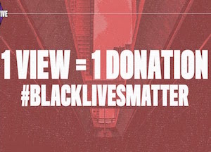
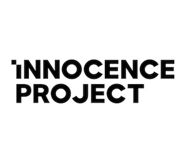
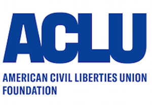

A free way to donate and help the movement without spending any money or even leaving the house. The stream is 24/7 and gets monetized through views and time spent on the stream through ad revenue, so the longer time you spend on the stream, the more money you are donating. The stream plays hip hop music and you can just mute it and work on other tabs if needed, one of the best ways of helping out.
Movement that focuses on “issues concerning racial injustice, police brutality, criminal justice reform, black immigration, economic injustice, LGBTQIA+ and human rights, environmental injustice, access to healthcare, access to quality education, and voting rights and suppression.”
Exonerates wrongly convicted people through DNA testing and pushes for reforms to the criminal justice system, working against the effects of mass incarceration. If you’re unaware with mass incarceration or the laws in place that lead to it disproportionally affected colored people (three strikes law, mandatory minimums, etc), see the Educate tab for resources to learn about it.
Mission: “Advance the liberation and well-being of Black and Brown communities through education, self-empowerment, mass-mobilization and the creation of new systems that elevate the next generation of change leaders. ”Provide plethora of legal resources, along with resources for COVID-19 aid for disproportionally affected black and brown communities.
This organization actively works to “create a more perfect union — beyond one person, party, or side.” They have many ongoing court cases, Supreme court cases, and work through federally advocacy to promote statutes that maintain civil rights in a number of different issues. They also provide resources for citizens to learn about their rights.
